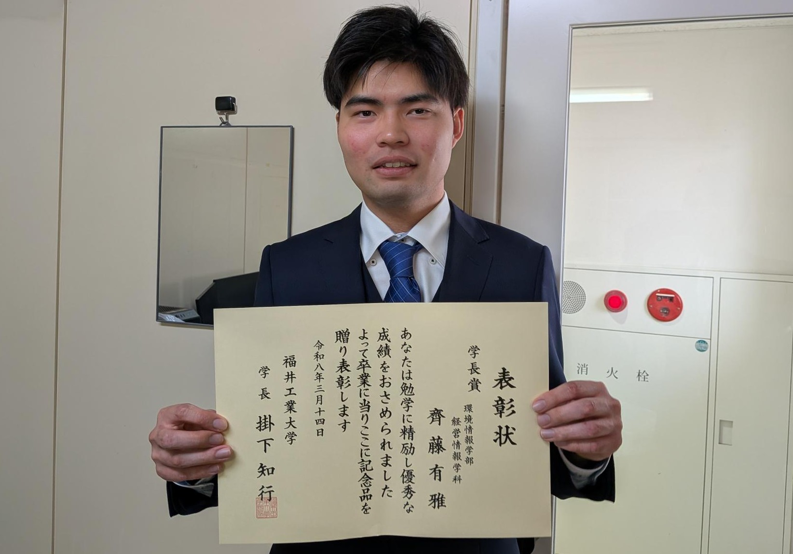
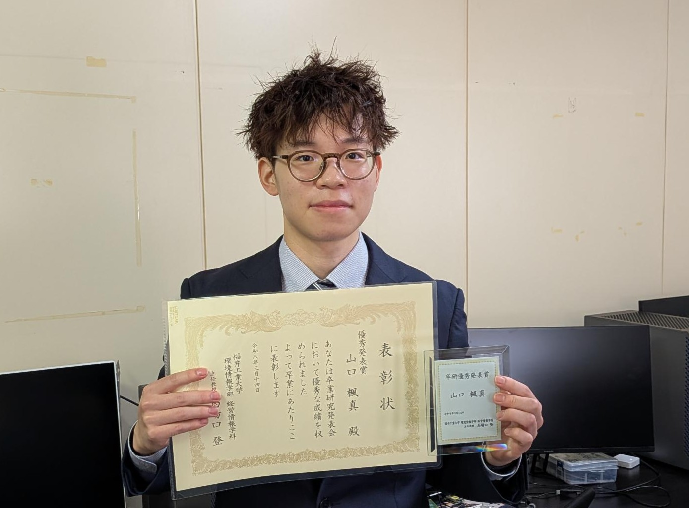
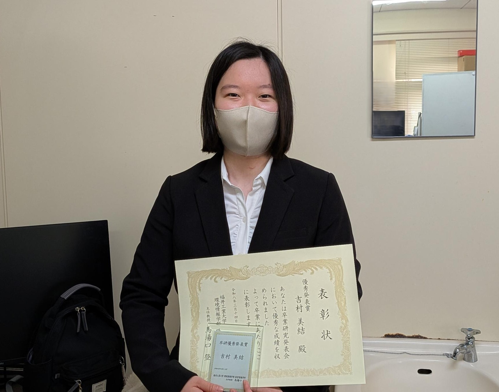
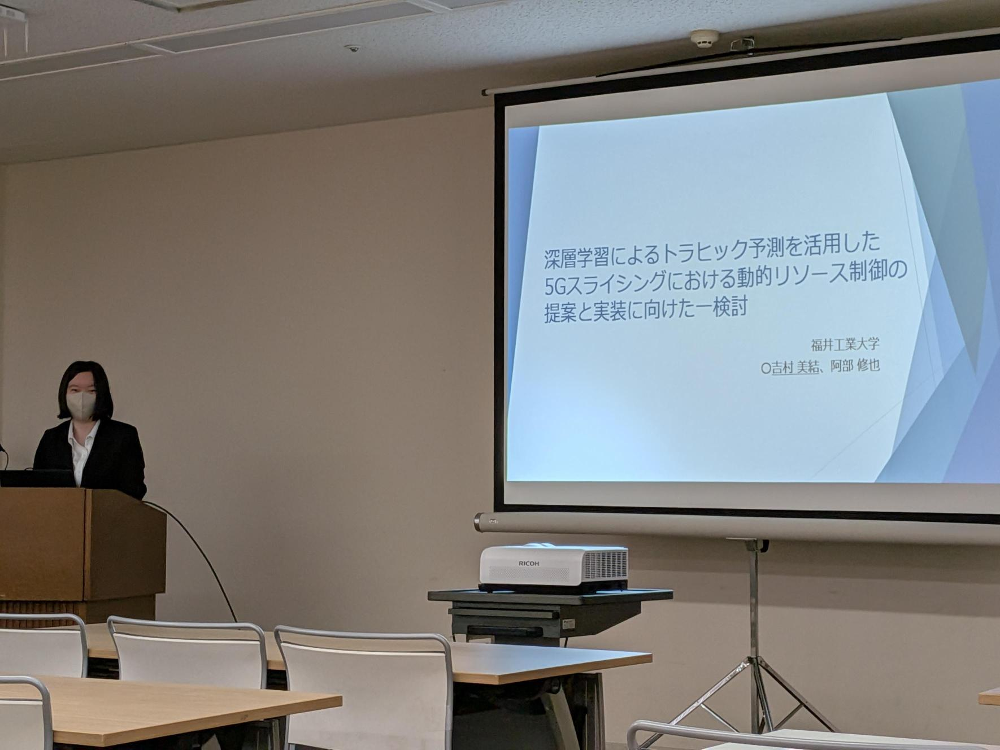

2026-03-14
所属学生の3人が表彰（学長賞、卒業研究発表会 優秀発表賞）されました。



齊藤有雅さんが学長賞、山口楓真さんと吉村美結さんが卒業研究発表会 優秀発表賞を受賞しました。



齊藤有雅さんが学長賞、山口楓真さんと吉村美結さんが卒業研究発表会 優秀発表賞を受賞しました。
今年度の学位記授与式が開催され、当研究室からは7名の学生が学位を授与されました。

当研究室の学部4年生、吉村美結さんが電子情報通信学会主催のネットワークシステム研究会（沖縄）において発表を行いました。タイトル「深層学習によるトラヒック予測を活用した5Gスライシングにおける動的リソース制御の提案と実装に向けた一検討」
今年度の卒業研究発表会が開催され、当研究室からは7名の学生が多彩な研究成果を発表しました。
阿部修也, 長谷川剛, サーバレス実装及びコンテナ実装によるマイクロサービスの性能比較